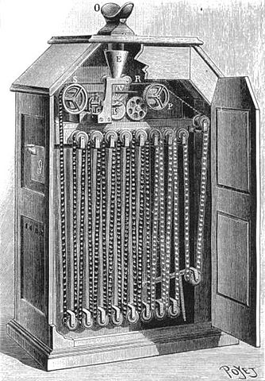

ここでは、映画にまつわる初めてを紹介します。
トーマス・エディソン
彼は、世界で最初に映画を見るという概念を作りました。

(キネトスコープWikipedia)
具体的には、キネトスコープという覗き箱式の装置を発明しました。
リュミエール兄弟
彼らは、世界で最初に映像をスクリーンに映し出すという機械を作りました。
具体的には、シネマトグラフという機械を発明しました。
上記の映像は実際に上映されていた映像です。
現代の人にとってはつまらないように感じますが
当時の人にとっては驚くべき事であり
列車が止まる映像では、驚き座席から立ち上がる人が多かったとの伝説もあります。
「フレッド・オットのくしゃみ」
著作権登録された現存する最古のモーション・ピクチャー

(フレッド・オットのくしゃみWikipedia)
当時、エディソンの助手であったフレッド・オットが煙草を一服してくしゃみをする姿を撮影したものです。
「M・アーウィンとJ・ライスの接吻」
世界で最初のキスシーンかつ、世界で最初の上映禁止作品
1896年エディソン社の作品。
同年ブロードウェイで大ヒットした舞台「未亡人ジョーンズ」のワンシーンだけの撮影を行いました。
キネトスコープの上映では問題なかったのですが、その後の上映では上映禁止となってしまいました。
「哀れなピエロ」
世界で最初のアニメーション
(ティアトル・オプティークWikipedia)
1892年10月28日に初上映された作品
この作品の上映方法は、テアトル・オプティックと呼ばれる機械ですが、
シネマトグラフの登場により廃れてしまい、発明者がセーヌ川に装置と作品を投げつけたため、
現存している作品は復元された作品となっています。
「ジャズ・シンガー」
世界最初の本格トーキー(有声)映画と唄われた作品
1927年に上映
上記の映像は、「お楽しみはこれからだ」という有名な台詞です。
ジャズシンガーのアル・ジョンソンが出演し、自身の過去を演じました。
本格的なトーキーの始まりの作品故に、映画界に大きく影響を与え、多くの映画会社が無声映画からトーキー製作に迎いました。
「ブロードウェイ・メロディ」
世界最初の全編トーキーによるミュージカル作品
1929年2月1日公開
監督：ハリー・ボーモント メトロ・ゴールドウィン・メイヤー（MGM）が制作を行いました。
第2回アカデミー賞を受賞しています。
「虚栄の市」
3色法テクニカラーによる総天然色長編映画(=カラー映画)

（芸術学_第４回より）
1935年公開
監督：ルーベン・マムーリアン
サイレント映画時代から1コマ1コマ着色する形でのカラー化は行われていましたが、より優れた方法での映画を可能にしました。
「蒸気船ウィリー」
世界初の本格的トーキーアニメ（短編）
1928年に公開されたミッキーマウスシリーズ第一弾です。
「白雪姫」
世界初の長編カラーアニメーション
1937年12月21日公開
ディズニーアニメ第1作目でもあります。
上記の映像は、「いつかの王子様が」を白雪姫が歌うシーンです。
日本でこの作品が公開されたのが、第二次世界大戦後の1950(昭和25)年9月26日です。
当時の日本のアニメに比べてあまりにも進んでいたので、こんな優れた作品を
作ることのできる国と戦争したのは愚かだったと思った映画人もいたそうです。